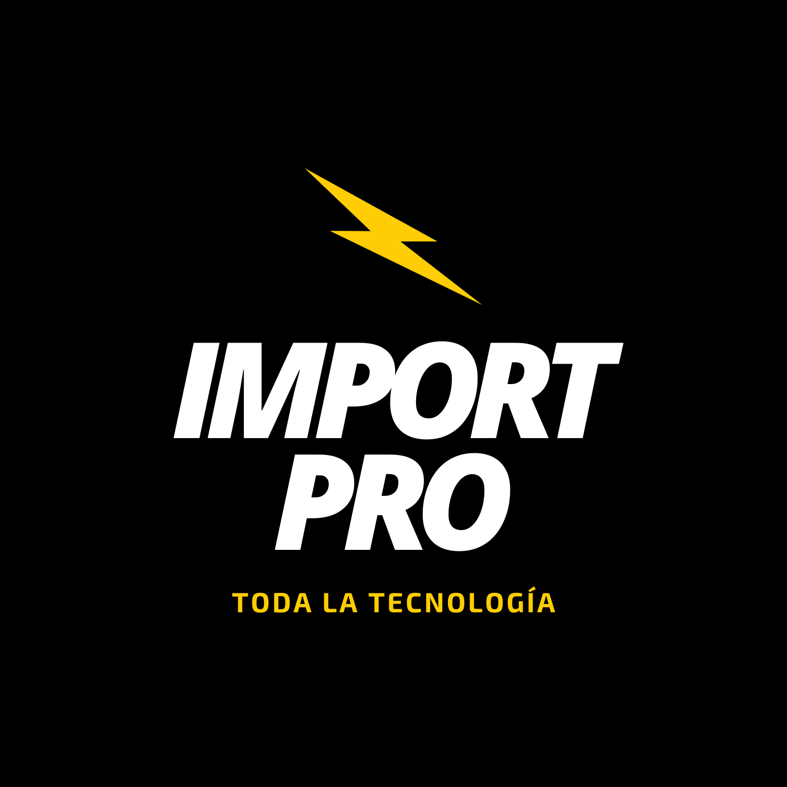

“Me dedico a la informática desde hace 23 años. En este recorrido he aprendido diversas habilidades
que me permiten moverme en varios sectores. Mis fuertes: Proactividad y orientación a resolución de problemas.”
Experiencia

Import Pro
Developer
Junio 2021 - Actualidad
Desarrollo de herramientas para el acompañamiento de los procesos internos.
Project Manager
Junio 2021 - Actualidad
Gestión de diversos proyectos de optimización de recursos.
Análisis e Implementación de Procesos Internos
Junio 2021 - Actualidad
Relevamiento e implementación de procesos en diversas herramientas informáticas.
Acumar
Team Leader de Centro de Atención a Usuarios
Julio 2012 - Junio 2021
Coordinación de equipos: soporte telefónico, visitas on-site e inventario.
Supervisión de tickets.
Soporte técnico nivel 3.
Gestión de compras.
Despliegue y gestión de servicios: WSUS, WDS, SCCM, Software Repository,OTRS, Invgate, Telefonía Fija y Celular.
Migración de Sistemas Operativos Windows 10.
Análisis e Implementación de Procesos Internos
Enero 2019 - Junio 2021
Relevamiento de procesos internos de la Coordinación de Informática.
Propuestas de mejoras y automatización.
Implementación en herramienta de tickets / procesos (Invgate).
Agente de Soporte Técnico
Julio 2010 - Junio 2012
Soporte técnico a usuarios de manera telefónica y presencial.
Instalación de sistemas operativos y software.
Creación y mantenimiento de imágenes de Sistemas Operativos.